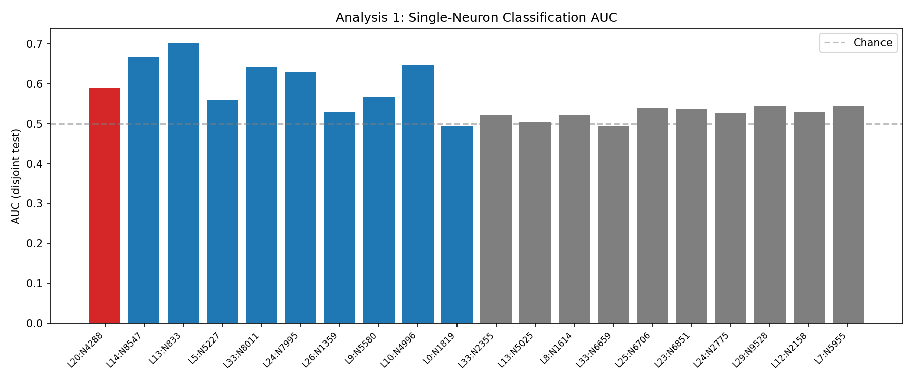
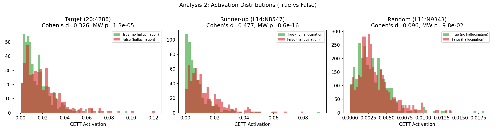
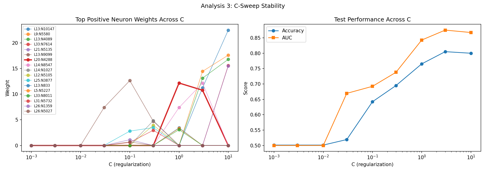
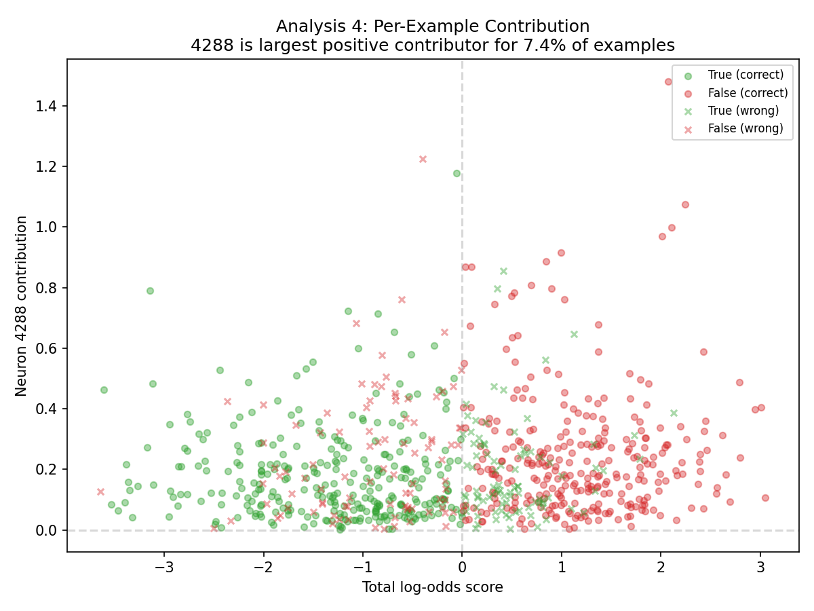
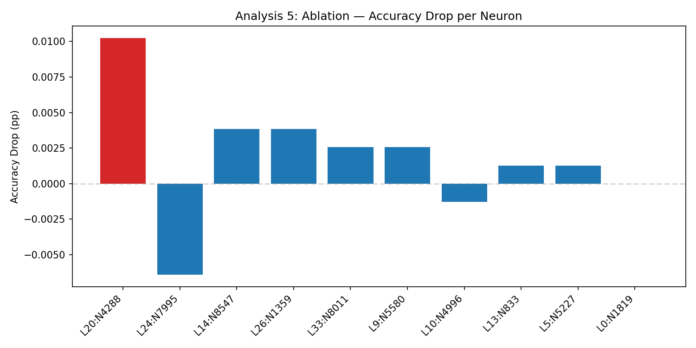
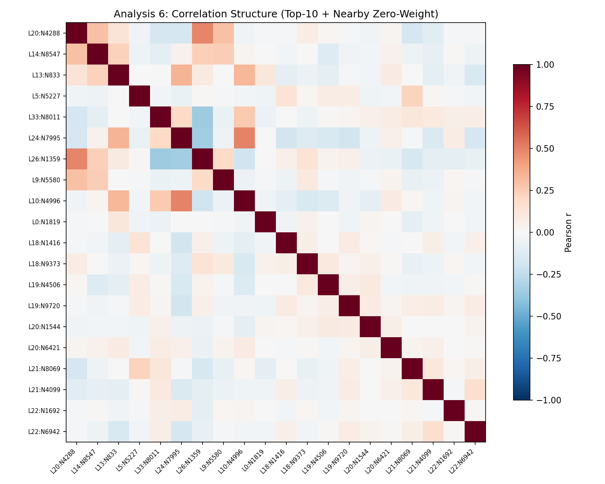

The strongest L1-weighted neuron in the sparse detector looked like a possible hub. This page is the forensic appendix: six independent tests, one scoreboard, and the reasoning for why the project should not anchor its mechanism story on this neuron alone.
A real hub neuron should survive multiple kinds of scrutiny. We required broad support instead of letting one flattering plot do all the work.

If 4288 were genuinely carrying the detector, it should classify well on its own. Instead its standalone AUC is 0.590, worse than L13:N833 and L14:N8547.

Cohen's d is 0.326, below the 0.5 cutoff we set ahead of time. The activations separate somewhat, but not enough to justify a "special neuron" story.

This is the sharpest test. Neuron 4288 is absent at C ≤ 0.3, appears at C = 1.0, then falls to rank 5 at C = 3.0 and rank 11 at C = 10.0. Real mechanism should not be that C-fragile.

Despite the oversized L1 weight, 4288 is the largest positive contributor on only 7.4% of examples. That is more "frequent committee member" than "single point of control."

Zeroing the neuron reduces accuracy by 1.03pp, below the 2pp threshold. It matters, but not enough to look like a true bottleneck.

The strongest observed correlation is r = 0.492 with L26:N1359, a zero-weight neuron. That is the exact pattern you expect when L1 picks one representative from a correlated feature group.
The surprising part is not that one neuron looked big, but that a sparse linear model made that bigness look causal. L1 regularization is useful because it forces a short list, but it also behaves like a budget committee: when several features tell a similar story, it often funds one spokesperson and cuts the rest.
Across ranking quality, class separation, regularization stability, per-example importance, ablation, and feature correlation, neuron 4288 behaves like an artifact of sparse credit assignment rather than a singular control knob.
The lesson here is not "ignore neuron 4288." It is "do not confuse sparse model bookkeeping with causal centrality."